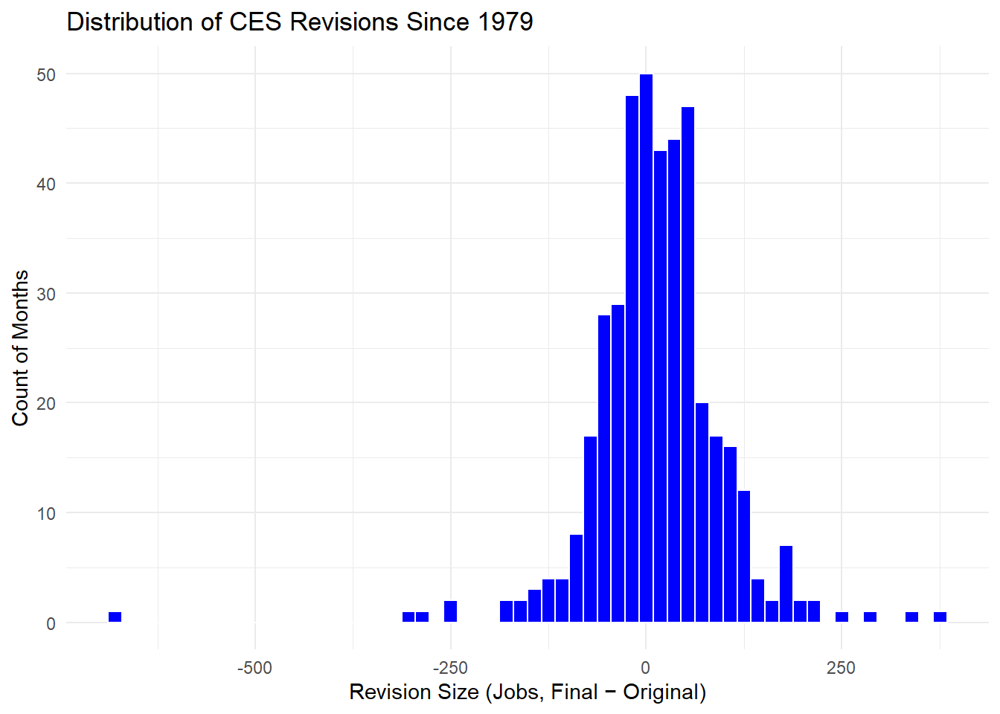
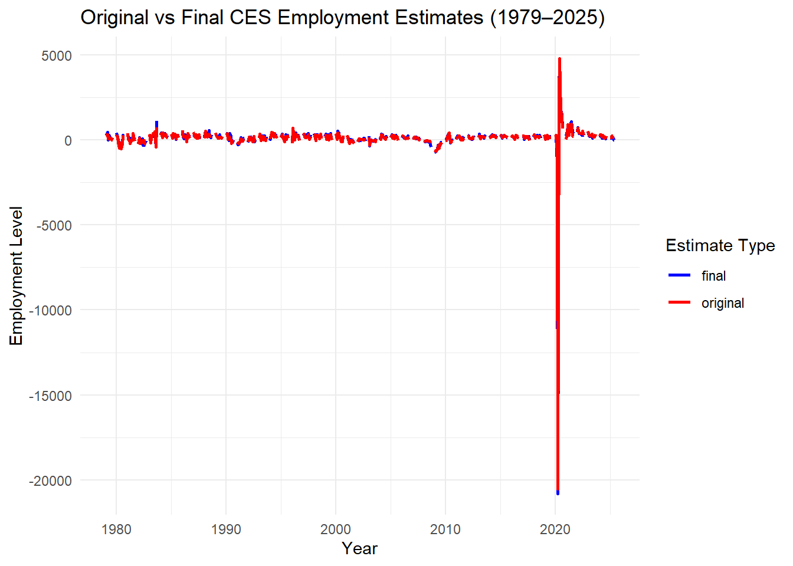

Plot 2: Monthly CES Revisions Over Time (Accuracy Trend)
ggplot(ces_full, aes(x = date, y = revision)) +geom_line(color ="red", linewidth =0.8) +geom_hline(yintercept =0, linetype ="dashed") +labs(title ="Monthly CES Revisions (1979–2025)",x ="Year",y ="Revision (Final − Original Estimate)" ) +theme_minimal()
Plot 3: Distribution of CES Revisions (How often revisions are small/large)
ggplot(ces_full, aes(x = revision)) +geom_histogram(bins =60, fill ="blue", color ="white") +labs(title ="Distribution of CES Revisions Since 1979",x ="Revision Size (Jobs, Final − Original)",y ="Count of Months" ) +theme_minimal()
Warning: Removed 138 rows containing non-finite outside the scale range
(`stat_bin()`).

Plot 4: Original vs Final Employment Estimates Over Time
library(tidyr)ces_compare <- ces_full %>%select(date, original, final) %>%pivot_longer(cols =c(original, final),names_to ="estimate_type",values_to ="value")ggplot(ces_compare, aes(x = date, y = value, color = estimate_type)) +geom_line(linewidth =0.9) +labs(title ="Original vs Final CES Employment Estimates (1979–2025)",x ="Year",y ="Employment Level",color ="Estimate Type" ) +scale_color_manual(values =c("original"="red", "final"="blue")) +theme_minimal()

Task 4
Question 1: Has the fraction of negative revisions increased post-2000?
library(dplyr)library(lubridate)library(infer)
Warning: package 'infer' was built under R version 4.5.2
Yes, per this test we saw that the fraction of negative CES revisions increased after 2000. A two-sample proportion test comparing the pre-2000 and post-2000 periods produced a statistically significant result where the p value was 0.0386.
Question 2: Has the fraction of negative revisions increased post-2000?
No, there is no statistical evidence that large revisions became more or less common after 2020 as a two-sample proportion test produced a statistically significant result where the p value was 0.209.
Question 3: Is the average revision significantly different from zero?
t3 <- ces_clean %>%t_test(response = revision, mu =0)t3
We conducted a one-sample t-test to determine whether the average CES revision differs from zero. The result was statistically significant as the p value was 0.000287. The estimated average revision is +15.0 jobs, with a 95% confidence interval of (6.95, 23.1).
Question 4: Has the average revision increased post-2020?
We compared the mean CES revision before and after 2020 using a two-sample t-test. The result was statistically significant as the p value was 0.0482, indicating that the average revision differs between the two periods.
Question 5: Are revisions larger when the underlying change in CES level is larger?
We conducted a two-sample t-test comparing mean revisions between “large change” months and “normal change” months. The result was not statistically significant as the p value was 0.654.
Task 5
Claim 1: “Jobs numbers were rigged under McEntarfer”
library(dplyr)library(lubridate)library(infer)library(ggplot2)stopifnot(exists("ces_clean"), exists("ces_full"))# Claim 1: “Jobs numbers were rigged under McEntarfer” — compare revisions during 2023–mid-2025 vs earlierces_claim1 <- ces_clean %>%mutate(mc_period =if_else( date >=ymd("2023-01-01") & date <=ymd("2025-06-01"),"McEntarfer","Other" ) )t_claim1_mean <- ces_claim1 %>%t_test(response = revision,explanatory = mc_period,order =c("McEntarfer", "Other") )t_claim1_neg <- ces_claim1 %>%prop_test(response = revision_negative,explanatory = mc_period,order =c("McEntarfer", "Other") )# Print Claim 1 test resultsprint("=== Claim 1 (mean revision) ===")
After a weak July 2025 jobs report and subsequent downward revisions to May and June’s reports, Donald Trump fired Bureau of Labor Statistics (BLS) Commissioner Erika McEntarfer, claiming that the jobs numbers were rigged to make republicans look bad (“Trump Fires BLS Commissioner”). However, as many economists and labor-statistics experts pointed out, revisions are routine.
This claim is a Pants on Fire despite the fact that the two-sample proportion test shows that negative revisions were more frequent during 2023–2025 than in the prior year. However, if we look at Plot 2: Monthly CES Revisions (1979–2025) graph from earlier, we see that negative monthly revisions are common, indicating large swings are not unique to 2023–25.Plot 3: Distribution of CES Revisions shows that most monthly revisions cluster close to zero. While the 2023–25 cluster lies within that tail, the revisions here are not unprecedented.
Additionally, the largest negative revision occurred back in 2020 during COVID, as seen in the table from task 2, and the average month-to-month employment change is 127,000 jobs per month, showing that these revisions and changes are not outliers. This shows that though revisions under McEntarfer were somewhat more negative, they were not abnormal or unprecedented, and consistent with historical fluctuation due to updated survey responses.
Claim 2: The Bureau of Labor Statistics (BLS) just revised down their jobs numbers from April 2024 to March 2025 by 911,000 jobs — the biggest revision on record and another blunder in the lengthy history of inaccuracies and incompetence at BLS.
library(dplyr)library(lubridate)library(infer)# Define claimed period (latest 12 months)ces_claim2 <- ces_clean %>%mutate(in_claim_period =factor(ifelse(date >=ymd("2024-04-01") & date <=ymd("2025-03-01"),"claim_period", "other_period"),levels =c("other_period", "claim_period") ))# Two-sample t-test: Are claim-period revisions more negative?t_claim2 <- ces_claim2 %>%t_test( revision ~ in_claim_period,alternative ="less", # specifically testing more negative revisionsorder =c("claim_period", "other_period") )t_claim2
# A tibble: 1 × 7
statistic t_df p_value alternative estimate lower_ci upper_ci
<dbl> <dbl> <dbl> <chr> <dbl> <dbl> <dbl>
1 -4.35 9.42 0.000836 less -64.5 -Inf -37.4
The Trump administration claimed that the Bureau of Labor Statistics (BLS) just revised down its jobs numbers from April 2024 to March 2025 by 911,000 jobs, the biggest revision on record, and another blunder in the lengthy history of inaccuracies and incompetence at BLS(“BLS Revisions Show President Trump Was Right”). This claim is false as the t-test shows that while revisions during 2024–25 were unusually negative, they were not the largest revision in the record. The largest negative revision occurred back in 2020 during COVID, as seen in the table from task 2. Additionally, the average revision since 1979 is only 15 jobs, meaning CES revisions are typically very small compared to total employment, which grows on average by 127,000 jobs per month.
Visual evidence further contradicts the claim. Plot 2: Monthly CES Revisions Over Time shows that large downward revisions have occurred multiple times in past decades, often with much greater magnitude than the 2024–2025 episode. Likewise, Plot 4: Original vs Final Employment Estimates Over Time shows that the gap between initial and revised figures in 2024–2025 looks similar to earlier years, demonstrating that the recent adjustments do not stand out historically.
In conclusion, while it is true that recent revisions were more negative than the long-term norm, they were nowhere close to being the largest ever recorded. This claim exaggerates normal statistical corrections and falsely portrays them as unprecedented failure.
Bibliography
“BLS Revisions Show President Trump Was Right - Again.” The White House, The United States Government, 9 Sept. 2025, www.whitehouse.gov/articles/2025/09/bls-revisions-show-president-trump-was-right-again/.
Trump Fires BLS Commissioner, Claiming Weak Jobs Numbers Were ‘Rigged’ - the New York Times, www.nytimes.com/2025/08/01/business/economy/trump-bls-firing-jobs-report.html. Accessed 7 Dec. 2025.